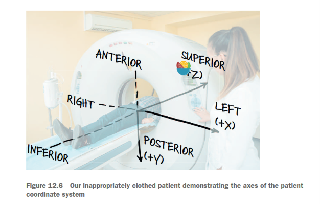
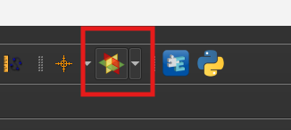
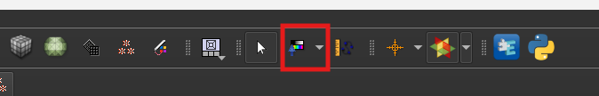
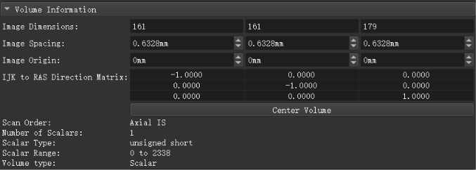
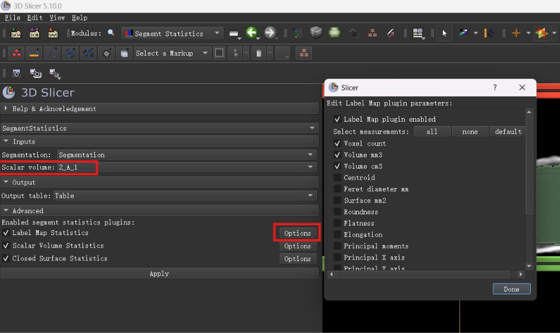
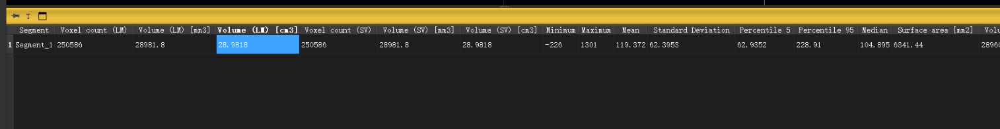
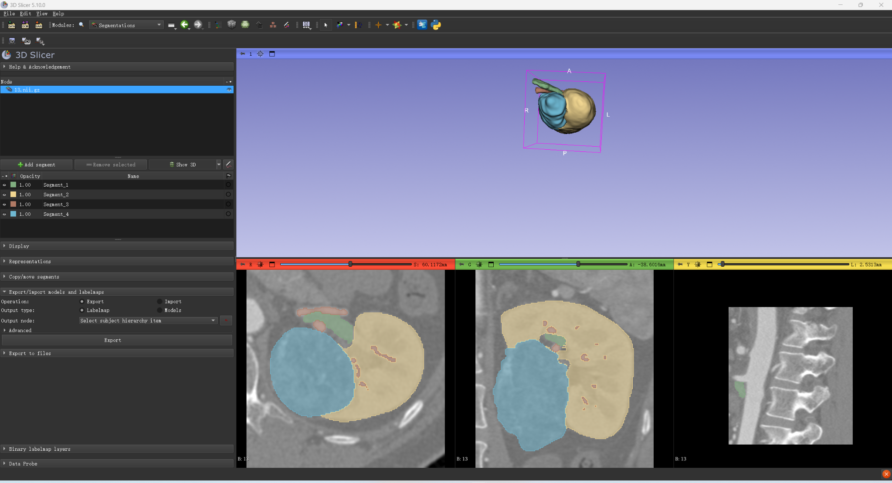

<!DOCTYPE html>


<html lang="zh-CN">


<head>
  <meta name="baidu-site-verification" content="codeva-NSg7ynviLa" />
  <meta charset="utf-8" />
    
  <meta name="viewport" content="width=device-width, initial-scale=1, maximum-scale=1" />
  <title>
    软件3D_Slicer |  
  </title>
  <meta name="generator" content="hexo-theme-ayer">
  
  <link rel="shortcut icon" href="/images/mojie.jpg" />
  
  
<link rel="stylesheet" href="/dist/main.css">

  <link rel="stylesheet" href="https://cdn.jsdelivr.net/gh/Shen-Yu/cdn/css/remixicon.min.css">
  
<link rel="stylesheet" href="/css/custom.css">

  
  <script src="https://cdn.jsdelivr.net/npm/pace-js@1.0.2/pace.min.js"></script>
  
  

  

<link rel="alternate" href="/atom.xml" title="null" type="application/atom+xml">
</head>

</html>

<body>
  <div id="app">
    
      
    <main class="content on">
      <section class="outer">
  <article
  id="post-软件3D-Slicer"
  class="article article-type-post"
  itemscope
  itemprop="blogPost"
  data-scroll-reveal
>
  <div class="article-inner">
    
    <header class="article-header">
       
<h1 class="article-title sea-center" style="border-left:0" itemprop="name">
  软件3D_Slicer
</h1>
 

    </header>
     
    <div class="article-meta">
      <a href="/posts/18192b85/" class="article-date">
  <time datetime="2026-11-10T07:20:14.000Z" itemprop="datePublished">2026-11-10</time>
</a>   
<div class="word_count">
    <span class="post-time">
        <span class="post-meta-item-icon">
            <i class="ri-quill-pen-line"></i>
            <span class="post-meta-item-text"> 字数统计:</span>
            <span class="post-count">5.2k</span>
        </span>
    </span>

    <span class="post-time">
        &nbsp; | &nbsp;
        <span class="post-meta-item-icon">
            <i class="ri-book-open-line"></i>
            <span class="post-meta-item-text"> 阅读时长≈</span>
            <span class="post-count">19 分钟</span>
        </span>
    </span>
</div>
 
    </div>
      
    <div class="tocbot"></div>


  
    <div class="article-entry" itemprop="articleBody">
       
  <p>针对 <strong>3D Slicer</strong>，我为你整理了一份从安装到上手查看CT影像的“极简实战指南”。它是目前医学影像处理领域最强大的免费开源软件，而且<strong>直接支持拖拽打开 <code>.nii.gz</code> 文件</strong>，不需要手动解压。</p>
<span id="more"></span>
<h2 id="查看-ct-图像">查看 CT 图像</h2>
<h3 id="第一步下载与安装针对不同系统">第一步：下载与安装（针对不同系统）</h3>
<ul>
<li><strong>官方下载地址</strong>：直接访问 <a target="_blank" rel="noopener" href="https://www.slicer.org">www.slicer.org</a> 点击 “Download Slicer”。官网下载太慢了，从中文网站 https://forum.slicercn.com/ 下载的 5.10 版本。</li>
<li><strong>版本选择</strong>：建议下载 <strong>Stable Release（稳定版）</strong>，文件名通常带 <code>stable</code> 字样。</li>
</ul>
<table>
<colgroup>
<col style="width: 20%" />
<col style="width: 16%" />
<col style="width: 62%" />
</colgroup>
<thead>
<tr>
<th style="text-align: left;">你的操作系统</th>
<th style="text-align: left;">下载文件类型</th>
<th style="text-align: left;">安装/启动方式</th>
</tr>
</thead>
<tbody>
<tr>
<td style="text-align: left;"><strong>Windows</strong></td>
<td style="text-align: left;"><code>.exe</code> 安装包</td>
<td style="text-align: left;">双击运行，按提示安装即可（建议默认路径）。如果电脑权限受限，也可以下载 <code>.zip</code> 绿色免安装版，解压后双击 <code>Slicer.exe</code> 直接运行。</td>
</tr>
<tr>
<td style="text-align: left;"><strong>macOS</strong> (苹果)</td>
<td style="text-align: left;"><code>.dmg</code> 磁盘映像</td>
<td style="text-align: left;">双击挂载后，把 <code>3D Slicer.app</code> 拖拽到 <strong>Applications（应用程序）</strong> 文件夹里。</td>
</tr>
<tr>
<td style="text-align: left;"><strong>Linux</strong> (Ubuntu等)</td>
<td style="text-align: left;"><code>.tar.gz</code> 压缩包</td>
<td style="text-align: left;">解压后，在终端进入文件夹，运行 <code>./Slicer</code> 即可启动（无需编译）。</td>
</tr>
</tbody>
</table>
<blockquote>
<p>💡 <strong>硬件要求</strong>：普通办公电脑即可流畅运行，建议内存至少 4GB，显卡支持 OpenGL 3.2 以上（近10年的电脑基本都满足）。</p>
</blockquote>
<hr />
<h3 id="第二步打开你的-ct-文件最核心操作">第二步：打开你的 CT 文件（最核心操作）</h3>
<p>安装完成后，按以下步骤载入你的 <code>.nii.gz</code> 文件：</p>
<ol type="1">
<li><p><strong>启动软件</strong>：打开 3D Slicer，界面默认是深色主题，分为多个面板。</p></li>
<li><p><strong>载入数据</strong>（三种方法任选）：</p>
<ul>
<li><strong>方法一（最快）</strong>：直接从文件夹里，<strong>把 <code>.nii.gz</code> 文件用鼠标拖拽</strong>到 3D Slicer 的软件窗口空白处，松开鼠标即可。</li>
<li><strong>方法二</strong>：点击左上角菜单栏的 <strong>File（文件）</strong> -&gt; <strong>Add Data（添加数据）</strong>，在弹出的对话框中点击 <strong>Choose File(s)</strong>，选中你的文件，然后点击 <strong>OK</strong>。</li>
</ul></li>
<li><p><strong>查看图像</strong>：载入成功后，主界面会显示 <strong>四个窗口</strong>：</p>
<p>首先，我们先通过下面的图了解一下 CT 图像的方向和轴</p>
<p></p>
<ul>
<li><strong>红色窗口</strong>：显示 X-Y 平面</li>
<li><strong>黄色窗口</strong>：显示 Y-Z 平面</li>
<li><strong>绿色窗口</strong>：显示 X-Z 平面</li>
<li><strong>灰色大窗口</strong>：<strong>3D 立体渲染</strong>（可以实时旋转查看三维效果）</li>
</ul></li>
</ol>
<p>进一步详细解释如下</p>
<ol type="1">
<li><strong>红色窗口</strong>（横断面 / Axial）（<strong>CT的原始数据</strong>）</li>
</ol>
<ul>
<li><strong>视角</strong>：像一把刀<strong>从头顶向下切</strong>（或者从脚底向上看），把身体切成上下两半。</li>
<li><strong>显示</strong>：你看到的是人体的横截面（左右、前后关系）。</li>
<li><strong>对应坐标</strong>：这个窗口显示的切片位置，由 <strong>S（Superior，上/头侧）</strong> 坐标决定。你这里的 <code>S: 101.0000mm</code>，就代表当前红色窗口正在显示<strong>距离头顶方向101毫米处</strong>的那个横截面。</li>
</ul>
<ol start="2" type="1">
<li>黄色窗口（矢状面 / Sagittal）</li>
</ol>
<ul>
<li><strong>视角</strong>：像一把刀<strong>从身体正中间向左或向右切</strong>，把身体分成左右两半。</li>
<li><strong>显示</strong>：你看到的是人体的纵切面（前后、上下关系）。</li>
<li><strong>对应坐标</strong>：这个窗口显示的切片位置，由左右方向的坐标决定（通常是 <strong>R（Right，右）</strong> 或 <strong>L（Left，左）</strong>）。你看到的 <strong>Y: 62.0000mm</strong>，代表这个切面位于身体前后方向的某个位置（注意，这里软件里显示的是Y，因为3D Slicer的坐标体系里，R/L是X轴，A/P是Y轴，S/I是Z轴，所以这里的Y代表前后位置）。</li>
</ul>
<ol start="3" type="1">
<li>绿色窗口（冠状面 / Coronal）</li>
</ol>
<ul>
<li><strong>视角</strong>：像一把刀<strong>从正面（或背面）切下去</strong>，把身体分成前后两半。</li>
<li><strong>显示</strong>：你看到的是人体的正面纵切面（左右、上下关系）。</li>
<li><strong>对应坐标</strong>：这个窗口显示的切片位置，由前后方向的坐标决定。你这里的 <code>A: -53.0000mm</code>，代表这个切面位于<strong>身体前方（Anterior，即腹侧）53毫米处</strong>。</li>
</ul>
<ol start="4" type="1">
<li>灰色/彩色的大窗口（三维视图 / 3D View）</li>
</ol>
<ul>
<li><strong>视角</strong>：这是一个<strong>立体的三维渲染视图</strong>。</li>
<li><strong>显示</strong>：它不是切面，而是把你的CT数据当成一个实体，通过光线渲染出一个立体的“假人”或“器官”模型。你可以按住鼠标左键<strong>随意旋转、缩放</strong>它，从各个角度观察整体形态。</li>
</ul>
<hr />
<h3 id="第三步学会看片的鼠标操控">第三步：学会“看片”的鼠标操控</h3>
<p>刚开始用最怕鼠标乱点导致画面乱跑，记住这套标准操作：</p>
<ul>
<li><strong>滚动鼠标滚轮</strong>：在红/黄/绿任意窗口滚动，可以<strong>逐层翻页</strong>查看 CT 切片（这是最常用的功能）。</li>
<li><strong>SHIFT + 左键并拖动</strong>（或 按住鼠标滚轮并拖动）：<strong>平移/拖拽</strong>画面（在放大后移动视野，不行，我试了是）。</li>
<li><strong>CTRL + 滚轮</strong> （或 按住鼠标右键并拖动） ：<strong>缩放</strong>画面（拉近拉远看细节）。</li>
</ul>
<p>3D 窗口</p>
<ul>
<li><strong>滚轮</strong>: 缩放</li>
<li><strong>按住鼠标左键并拖动</strong> : 旋转</li>
<li><strong>CTRL + 左键并拖动</strong> : 绕着一点旋转</li>
<li><strong>SHIFT + 左键并拖动</strong> : 移动</li>
</ul>
<h4 id="加入交叉链接">加入交叉链接</h4>
<p>我的版本是 5.10.0 ，点击医学窗口上的六角星图标，二维图像上会出现红黄绿的线，这就是交叉链接，用于确认位置。</p>
<p></p>
<h3 id="第四步针对-ct-影像的调色技巧非常重要">第四步：针对 CT 影像的“调色”技巧（非常重要）</h3>
<p>找到窗口上的这个图标，选中它。</p>
<p></p>
<p>然后鼠标就会变成上面这个图案。</p>
<p>按住左键，左右拖动有不同的效果，上下拖动也有不同的效果。</p>
<p>之后，点击窗口上的箭头图标（上图中框起来部分左边的那个图标），恢复原来的鼠标演示。</p>
<blockquote>
<p>这种做法实际就是在调整 Volumns 模块下的 “Window/Level” 参数，下面有详细介绍</p>
<p>Volumns 模块下有一些预设的“Window/Level” 参数，见其中的 Presets 参数（比如骨窗、肺窗等），点击不同图标，便选择不同的预设的“Window/Level” 参数。</p>
</blockquote>
<h4 id="ct值灰度和windowlevel三者的关系"><strong>“CT值”</strong>、<strong>“灰度”</strong>和<strong>“Window/Level”</strong>三者的关系</h4>
<p>CT 值范围在[-1000, 1000] 左右，但是灰度只有 256 级。 如果把这几千个CT值（-1000到+3000）平均分配到256级灰度上，每1级灰度要包含大约15个CT值，那么<strong>骨骼和软组织的灰度几乎一模一样</strong>，全是灰蒙蒙的，根本分不清。</p>
<p><strong>Window/Level（窗宽/窗位）就是为了解决这个问题——它决定这宝贵的256级灰度，到底用来显示整个CT值标尺上的哪一段。</strong></p>
<ol type="1">
<li><strong>Level（窗位 / 中心值）</strong>——“手电筒照在挂图的哪个位置”</li>
</ol>
<ul>
<li><p><strong>含义</strong>：它指定你当前<strong>这256级灰度的“中心点”</strong>对准CT值标尺的哪个数值。</p></li>
<li><p><strong>直观效果（调高或调低）</strong>：</p>
<ul>
<li><strong>调低 Level</strong>（比如从 -425 调到 -800）：灰度中心移向空气和肺组织。原本显示灰色的区域，现在要分配给更低的CT值，所以<strong>整体画面变黑变暗</strong>，但肺纹理的细节会突显出来（这就是“肺窗”）。</li>
<li><strong>调高 Level</strong>（比如从 -425 调到 +300）：灰度中心移向骨骼和软组织。原本显示灰色的区域给了高密度组织，所以<strong>整体画面变白变亮</strong>（这就是“骨窗”的底子）。</li>
</ul>
<p>简单记：<strong>Level 主要管“画面明暗”</strong>，它决定了你把中间灰色对准哪一类组织。</p></li>
</ul>
<ol start="2" type="1">
<li><strong>Window（窗宽 / 宽度）</strong>——“手电筒光束的粗细”</li>
</ol>
<ul>
<li><p><strong>含义</strong>：它指定你当前<strong>这256级灰度总共覆盖了CT值标尺上多宽的一段距离</strong>。</p></li>
<li><p><strong>直观效果（调大或调小）</strong>：</p>
<ul>
<li><strong>调小 Window</strong>（比如从 7381 调到 <strong>200</strong>）：光束变窄，只覆盖很小一段CT值（比如只覆盖 -100 到 +100）。因为只覆盖200个CT值，却要用256级灰度来显示，所以<strong>每一级灰度只对应不到1个CT值</strong>。效果是：<strong>对比度剧烈增加，黑白分明</strong>，一点密度差异都能看得清清楚楚（适合看脑出血或细微骨折）。但坏处是，低于-100的空气和高于+100的骨骼会<strong>全部变成纯黑或纯白</strong>，直接“消失”在画面外。</li>
<li><strong>调大 Window</strong>（比如你现在的 <strong>7381</strong>）：光束极宽，覆盖了从 -4115 到 +3265 的超大范围（几乎包含了人体所有组织）。因为要拿256级灰度去铺平这7000多个CT值，所以<strong>每一级灰度要容纳约29个CT值</strong>。效果是：<strong>对比度极低</strong>，软组织、骨骼、空气都被“压缩”在灰蒙蒙的色调里，看起来像蒙了一层雾（这就是所谓的“宽窗”）。但好处是<strong>一眼能看到所有结构</strong>，没有任何组织被剔除。</li>
</ul>
<p>简单记：<strong>Window 主要管“对比度”</strong>，调小则对比强烈（锐利但选择性强），调大则对比柔和（平滑但一览无余）。</p></li>
</ul>
<p>基于我从别的视频看的操作来说，这个东西没有那么复杂，看一下公式就很简单了</p>
<ol type="1">
<li><p>Level 是中心值，window 是窗宽，因此窗口范围是 <code>[level - 0.5* window, level + 0.5* window]</code></p></li>
<li><p>对于<strong>在这个范围内的 CT 值</strong>在这个窗口范围进行归一化，这里用 <code>window_min</code> 和 <code>window_max</code> 表示两个范围
<span class="math display">\[
\text{ct_new} = \frac{\text{ct} - \text{window_min}}{\text{window_max} - \text{window_min}}  = \frac{\text{ct} - \text{window_min}}{\text{window}}
\]</span></p></li>
<li><p>超出这个范围的 CT 值，如果小于 <code>window_min</code> ，则设为0 （<strong>纯黑</strong>）；如果大于 <code>window_max</code> ，则设为1（<strong>纯白</strong>）。</p></li>
<li><p>可视化时再乘以 255 ，转换为灰度图的灰度值
<span class="math display">\[
\text{ct_new}  =  \frac{\text{ct} - \text{window_min}}{\text{window}} * 255
\]</span></p></li>
</ol>
<h3 id="其他3d-图像渲染">其他：3D 图像渲染</h3>
<p>图中展示的正是 <strong>3D Slicer 的“体积渲染（Volume Rendering）”功能</strong>。</p>
<p>你现在看到的是“骨架”，大概率是因为你只使用了默认的“骨骼阈值”，或者只看了切片视图。要实现图中这种<strong>半透明、能看到骨骼和软组织整体轮廓</strong>的3D效果，请按照以下步骤操作：</p>
<ol type="1">
<li><p><strong>切换模块</strong>：在左侧的下拉菜单中找到并选择 <strong>Volume Rendering（体积渲染）</strong> 模块。</p></li>
<li><p><strong>启用渲染</strong>：在界面中找到你的CT图像（例如 <code>13.nii.gz</code>），<strong>点击前面的小眼睛图标（或勾选）</strong> 启用它。</p></li>
<li><p><strong>调整预设（关键步骤）</strong>：因为你现在只有骨架，你需要更改预设。在下方的“Preset”（预设）下拉菜单中，不要选“CT-Bones”（CT骨骼），<strong>尝试选择“CT-Coronary-Arteries”</strong></p></li>
<li><p><strong>手动调整透明度</strong>：手动调节 <strong>Shift（偏移）</strong> ，或者直接拖动下方“Opacity”控制线上的圆点。把透明度调高一点，让肌肉和骨骼融合显现出来。</p></li>
</ol>
<h3 id="其他在不同数据间切换显示">其他：在不同数据间切换显示</h3>
<p>数据加载后，都存在于当前“场景”中。想要“切换”查看，最核心的工具就是 <strong>Data 模块</strong>（数据模块）。通过它，你可以控制每个数据集的“可见性”。</p>
<ul>
<li><strong>找到“Data”模块</strong>：在右侧模块选择下拉菜单中，找到并点击 <strong>Data</strong>。</li>
<li><strong>认识“眼睛”图标</strong>：在“Data”模块的列表中，每个数据集左侧都有一个 <strong>“眼睛”图标</strong> 👁️。这是控制显示的关键。
<ul>
<li><strong>眼睛睁开</strong> 👁️：该数据集<strong>正在显示</strong>。</li>
<li><strong>眼睛闭上</strong>：该数据集<strong>被隐藏</strong>。</li>
</ul></li>
<li><strong>进行切换</strong>：<strong>单击</strong>某个数据的“眼睛”图标，即可切换其显示状态。
<ul>
<li>如果想<strong>只显示一个数据，隐藏其他所有数据</strong>，可以在其“眼睛”图标上<strong>右键单击</strong>，选择 <strong>“Show in slice views as background”</strong>（在切片视图中显示为背景）。</li>
</ul></li>
</ul>
<h2 id="查看图像的元数据">查看图像的元数据</h2>
<p>在 3D Slicer 中查看 Image Spacing（体素间距）以及原点的具体方法有几种，最常用的是通过 <strong>Volumes 模块</strong>。</p>
<h3 id="方法一使用-volumes-模块最直观">方法一：使用 Volumes 模块（最直观）</h3>
<ol type="1">
<li><p>在顶部的模块下拉菜单中，选择 <strong>Volumes</strong>。</p></li>
<li><p>在左侧的 <strong>Active Volume</strong> 下拉框中，选中你想要查看的节点（比如原图，或者超过范围的预测标签图）。</p></li>
<li><p>在下方的 <strong>Volume Information</strong> 面板中，你会直接看到：</p>
<ul>
<li><p><strong>Image Spacing</strong>（体素间距，例如 0.5 x 0.5 x 1.0）</p></li>
<li><p><strong>Image Dimensions</strong>（图像尺寸，例如 512 × 512 × 512）</p></li>
<li><p><strong>Image Origin</strong>（图像原点）：<strong>这个图像在物理空间（毫米）里的“起点”坐标（0,0,0）在哪里，单位毫米。</strong></p>
<blockquote>
<p>在 3D Slicer 中，使用的是 RAS 坐标系（Right-右, Anterior-前, Superior-上）。Image Origin 就是图像第一个体素（左上角那个点）在患者身体坐标系中的精确位置。</p>
</blockquote></li>
<li><p><strong>“IJP to RAS” 方向矩阵</strong>：<strong>方向余弦矩阵</strong>，描述影像坐标轴与病人解剖坐标系（RAS/LPS）之间的旋转关系。</p></li>
<li><p><em>注意：你可以直接对比原图和标签图的这几个数值，如果哪个不一致，就是导致标注超出范围的原因。</em></p></li>
</ul></li>
</ol>
<p></p>
<p><strong>特别提示：</strong>
在解决上一轮“超出范围”的问题时，<strong>Image Spacing</strong>、<strong>Image Origin</strong> 和 <strong>Image Dimensions</strong> 这三个数值必须完全一致。</p>
<h2 id="ct-标注">CT 标注</h2>
<p>参考视频</p>
<ol type="1">
<li>https://www.bilibili.com/video/BV15b5S6qEuX/?spm_id_from=333.1387.favlist.content.click</li>
<li>https://www.bilibili.com/video/BV1VP4y1b73b?spm_id_from=333.788.videopod.sections&amp;vd_source=584d44ba7fed271fb82848e7894a53c8</li>
</ol>
<h3 id="标注后查看roi体素个数和体积">标注后查看ROI体素个数和体积</h3>
<ol type="1">
<li><p>打开模块 Quantification → Segment Statistics</p></li>
<li><p><strong>Scalar volume</strong>：选原始 CT 体数据</p>
<p><strong>Advanced → Labelmap Statistics (勾选) → 点击 Options</strong> ：弹出下图右边的窗口，选中</p>
<ul>
<li>Voxel count（体素个数）</li>
<li>Volume mm³</li>
<li>Volume cm³</li>
</ul>
<p>下面的 Scalar Volume Statistics（可选，看 HU 均值等）</p></li>
<li><p><strong>点 Apply</strong></p></li>
</ol>
<p></p>
<p>结果示例如下</p>
<p></p>
<h3 id="保存标注后的数据">保存标注后的数据</h3>
<h4 id="单个roi导出成-nifti给外部脚本用推荐">单个ROI导出成 NIfTI（给外部脚本用，推荐）</h4>
<ol type="1">
<li>打开 <code>Segmentations</code> 模块（或 Segment Editor 里点 <code>Segments</code> 旁边下拉）</li>
<li>找到 <code>Export to files</code></li>
<li>设置：
<ul>
<li>点击 <code>Destination folder</code> 右侧文件夹图标，选一个固定目录</li>
<li>Reference volume：选原始 CT（保证坐标/spacing 一致）</li>
<li>File format：<strong>NIfTI（.nii / .nii.gz）</strong></li>
</ul></li>
<li>点 Export</li>
<li>得到：<code>oyster_001_cavity.nii.gz</code></li>
</ol>
<blockquote>
<p>如果有多段不重叠 segment，可合并成一个 labelmap；重叠 segment 建议分开存或留 Slicer 原生格式</p>
</blockquote>
<h4 id="界面参数逐项设置说明">界面参数逐项设置说明</h4>
<table>
<colgroup>
<col style="width: 24%" />
<col style="width: 22%" />
<col style="width: 53%" />
</colgroup>
<thead>
<tr>
<th>界面参数</th>
<th>当前截图状态</th>
<th>详细设置建议与作用</th>
</tr>
</thead>
<tbody>
<tr>
<td><strong>Destination folder</strong></td>
<td>默认 Slicer 目录</td>
<td><strong>建议改为自定义路径</strong>（如 <code>D:\oyster_data\masks</code>），方便后续脚本读取，避免找不到文件。</td>
</tr>
<tr>
<td><strong>Visible segments only</strong></td>
<td>未勾选</td>
<td><strong>只导出”当前在 3D 视图里能看到的”那些 segment</strong>。所谓能看到就是每个 segment 名字前面的 <strong>眼睛图标</strong>是否打开。不勾选就是默认全部的 segment。</td>
</tr>
<tr>
<td><strong>Reference volume</strong></td>
<td><code>2_A_1</code></td>
<td><strong>必须选原始 CT 体数据</strong>。保证导出的 Mask 与原始 CT 的原点、尺寸、Spacing（各向异性）完全对齐。</td>
</tr>
<tr>
<td><strong>File format</strong></td>
<td><code>NIFTI</code></td>
<td><strong>保持 NIfTI</strong>（<code>.nii.gz</code>），这是外部统计/深度学习最通用的格式。</td>
</tr>
<tr>
<td><strong>Merge into single file</strong></td>
<td>未勾选</td>
<td>若有多个不重叠段（如左腔/右腔），<strong>建议勾选</strong>，所有选中的 Segment 导出为<strong>一个 .nii.gz 文件</strong>。</td>
</tr>
<tr>
<td><strong>Size scale</strong></td>
<td><code>1.000</code></td>
<td><strong>保持 1.000</strong>，不要缩放，保证体素物理尺寸真实（体积计算依赖此）。</td>
</tr>
<tr>
<td><strong>Coordinate system</strong></td>
<td><code>LPS</code></td>
<td><strong>保持 LPS</strong>（医学影像标准），Python（nibabel/SimpleITK）读取默认兼容。</td>
</tr>
<tr>
<td><strong>Use compression</strong></td>
<td>未勾选</td>
<td><strong>强烈建议勾选</strong>，生成 <code>.nii.gz</code>，节省磁盘空间（CT Mask 压缩率很高）。</td>
</tr>
<tr>
<td><strong>Use color table values</strong></td>
<td><code>Segmentation_ColorTable</code></td>
<td>合并单文件时，用颜色表映射标签值（如腔体=1，壳=2）；分开存可忽略。</td>
</tr>
<tr>
<td><strong>Show destination folder</strong></td>
<td>已勾选</td>
<td>导出后自动弹窗打开文件夹，方便确认文件是否生成。</td>
</tr>
</tbody>
</table>
<h4 id="多个roi-如何保存">多个ROI 如何保存</h4>
<p>在 <code>Export to files</code> 里：</p>
<ul>
<li>勾选 <strong>Merge into single file</strong></li>
<li>格式选 <strong>NIfTI</strong></li>
<li><strong>不勾 Use color table values</strong></li>
</ul>
<p>导出结果：</p>
<ul>
<li>背景 = 0</li>
<li>第一个 segment → 标签 1</li>
<li>第二个 segment → 标签 2</li>
<li>第三个 segment → 标签 3</li>
<li>……</li>
</ul>
<p>⚠️ 但注意：</p>
<p>这个“1、2、3”是<strong>按 segmentation 节点里 segment 的顺序</strong>来的，不是按你颜色或名字。</p>
<p>如果你中间删过段、合并过，编号可能会跳（比如 1、3、5）。</p>
<h2 id="查看-ct-标注">查看 CT 标注</h2>
<p>要直观查看 KiPA 2022 数据集中值为 0-5 的标签，核心操作是在导入时<strong>正确地将文件识别为“标签图”（LabelMap）或“分割”（Segmentation）</strong>。</p>
<h3 id="了解你的标签数据">🏷️ 了解你的标签数据</h3>
<p>首先，了解一下 KiPA 2022 数据集标签的具体含义，这能帮助你理解看到的内容。</p>
<ul>
<li><strong>0</strong>：背景 (Background)</li>
<li><strong>1</strong>：肾静脉 (Renal vein)</li>
<li><strong>2</strong>：肾脏 (Kidney)</li>
<li><strong>3</strong>：肾动脉 (Renal artery)</li>
<li><strong>4</strong>：肿瘤 (Tumor)</li>
</ul>
<p>好的，我们彻底从头开始，一步一步来。这次我们不跳步，把每一步都拆解清楚。</p>
<p>你的目标是把 KiPA 数据集的标签（数值0-5的标注文件）<strong>正确叠加</strong>在CT原始图像上查看。</p>
<hr />
<h3 id="准备明确你需要的两个文件">📂 准备：明确你需要的两个文件</h3>
<p>在开始前，请确保你的电脑里有这两个文件（缺一不可）：</p>
<ol type="1">
<li><strong>CT原始图像</strong>：比如 <code>000-005_3.nii.gz</code>（这是灰度的背景图）。</li>
<li><strong>标签图像</strong>：比如 <code>13.nii.gz</code>（这就是你说的 0-5 的标注数据）。</li>
</ol>
<hr />
<h3 id="第一步清空软件从头开始推荐">🧹 第一步：清空软件，从头开始（推荐）</h3>
<p>为了避免之前的设置干扰，先清空场景。</p>
<ul>
<li>点击菜单栏的 <strong><code>File</code></strong> -&gt; <strong><code>Close Scene</code></strong>（关闭场景），在弹出的提示中选择“不保存”或“No”。</li>
</ul>
<hr />
<h3 id="第二步按顺序加载文件关键顺序很重要">📥 第二步：按顺序加载文件（关键！顺序很重要）</h3>
<p><strong>一定要先加载CT图像，再加载标签图像。</strong></p>
<ol type="1">
<li><strong>加载CT原始图像</strong>：
<ul>
<li>将你的 CT 文件（<code>000-005_3.nii.gz</code>）直接<strong>拖拽</strong>到 3D Slicer 主窗口。</li>
<li>会弹出一个“Add Data”窗口，直接点击 <strong><code>OK</code></strong> 即可。此时，红黄绿切片窗口应该能看到灰色的CT人体图像了。</li>
</ul></li>
<li><strong>加载标签图像（关键操作在这里）</strong>：
<ul>
<li>将你的标签文件（<code>13.nii.gz</code>）也<strong>拖拽</strong>到 3D Slicer 窗口。</li>
<li>此时弹出的“Add Data”窗口<strong>千万不要直接点 <code>OK</code></strong>！</li>
<li>在窗口中找到 <strong><code>Description</code></strong>（描述）下拉菜单，<strong>手动选择 <code>Segmentation</code></strong>（分割）。</li>
<li>如果你的界面没有这个选项，请<strong>勾选左下角的 <code>Show Options</code></strong>（显示选项），然后在展开的选项里，<strong>勾选 <code>LabelMap</code></strong> 复选框。</li>
<li>这一步是告诉软件“这是个彩色蒙版，不是普通片子”。选好后，点击 <strong><code>OK</code></strong>。</li>
</ul></li>
</ol>
<hr />
<h3 id="第三步设置背景与前景解决切片全黑的核心"><del>🎨 第三步：设置“背景”与“前景”（解决切片全黑的核心）</del></h3>
<p><strong>这里我没有设置，我的软件版本不需要设置这个</strong>。</p>
<p>加载完后，看屏幕左侧的列表（Subject hierarchy）。此时CT和标签都在列表里，但默认可能是标签盖住了CT，或者显示不正确。我们要手动指定它们的层级。</p>
<ol type="1">
<li><strong>找到CT文件</strong>（通常是文件名，比如 <code>000-005_3</code>），在它最左边的 <strong>“眼睛”图标</strong> 👁️ 上<strong>点击鼠标右键</strong>。
<ul>
<li>在弹出的菜单中，选择 <strong><code>Show in slice views as Background</code></strong>（在切片视图中显示为背景）。这一步让CT变成底图。</li>
</ul></li>
<li><strong>找到标签文件</strong>（比如 <code>13.nii.gz_1</code>），在它左边的 <strong>“眼睛”图标</strong> 👁️ 上<strong>点击鼠标右键</strong>。
<ul>
<li>在弹出的菜单中，选择 <strong><code>Show in slice views as Foreground</code></strong>（在切片视图中显示为前景）。这一步让标签变成覆盖在上面的彩色蒙版。</li>
</ul></li>
</ol>
<p>做完这两步，你再去看红色/黄色/绿色的二维切片窗口，应该就能看到<strong>灰白的CT图像上覆盖着彩色的区域</strong>了。</p>
<hr />
<h3 id="第四步调整标注颜色解决颜色太黑看不清">🖌️ 第四步：调整标注颜色（解决颜色太黑看不清）</h3>
<p>如果看到了CT，但上面的色块是黑的或者很暗淡，那是因为软件随机分配了深色。</p>
<ol type="1">
<li>在右侧的模块选择下拉菜单中，切换到 <strong><code>Segmentations</code></strong> 模块。</li>
<li>在面板下方，你会看到 <code>Segment_1</code>、<code>Segment_2</code> 等列表。</li>
<li>每个分段前面都有一个<strong>彩色的小方块</strong>。<strong>点击这个小方块</strong>，会弹出调色板。</li>
<li>把 <code>Segment_1</code> 改成<strong>红色</strong>，<code>Segment_2</code> 改成<strong>蓝色</strong>，<code>Segment_3</code> 改成<strong>绿色</strong>，<code>Segment_4</code> 改成<strong>黄色</strong>（选亮色即可）。</li>
<li>改完后，切片上的颜色会立刻变亮。</li>
</ol>
<hr />
<h3 id="第五步在3d视图中查看立体模型">🖥️ 第五步：在3D视图中查看立体模型</h3>
<p>如果你想看立体的三维彩色模型，而不是二维切片：</p>
<ol type="1">
<li>确保你还在 <strong><code>Segmentations</code></strong> 模块。</li>
<li>找到面板最上方的 <strong><code>Show 3D</code></strong>（显示三维）按钮，点击它。</li>
<li>此时，右下角的3D视图窗口就会显示出立体的彩色器官/肿瘤模型。你可以按住鼠标左键旋转它查看。</li>
</ol>
<p>调解透明度（比如查看血管结构）：</p>
<ul>
<li>调解 <code>Segmentations</code> 模块中 <strong>Display</strong> 中的 <strong>overall opacity</strong> 参数，调解透明度</li>
</ul>
<hr />
<h3 id="最后的检查如果还是没显示">⚠️ 最后的检查（如果还是没显示）</h3>
<p>如果做完以上五步，切片上依然只有CT没有彩色，或者全黑，请检查以下两处：</p>
<ol type="1">
<li><strong>检查透明度滑块</strong>：看红色切片窗口的<strong>左上角工具栏</strong>，有一个前景透明度的滑块（通常标有 <code>F</code> 或一个滑条），确保它不在最左边（全透明），拖到中间位置。</li>
<li><strong>检查标签文件是否包含CT</strong>：KiPA数据集有时会把标签和CT合并在一个多通道文件里。如果上述方法失败，确认一下你的 <code>13.nii.gz</code> 文件大小，如果它和CT文件一样大（几十MB），它可能本身就是CT图像，而非标签。请确保你拖拽的是专门以“_seg”或“_label”命名的标签文件。</li>
</ol>
<p>kipp 标注数据实际效果如下</p>
<p></p>
<h1 id="参考资料">参考资料</h1>
<ol type="1">
<li>https://www.bilibili.com/video/BV1w44y147ph/?spm_id_from=333.1387.favlist.content.click&amp;vd_source=584d44ba7fed271fb82848e7894a53c8</li>
<li>https://www.bilibili.com/video/BV1i94y1k7wA/?vd_source=584d44ba7fed271fb82848e7894a53c8</li>
</ol>
 
      <!-- reward -->
      
    </div>
    

    <!-- copyright -->
    
    <div class="declare">
      <ul class="post-copyright">
        <li>
          <i class="ri-copyright-line"></i>
          <strong>版权声明： </strong>
          
          本博客所有文章除特别声明外，著作权归作者所有。转载请注明出处！
          
        </li>
      </ul>
    </div>
    
    <footer class="article-footer">
       
    </footer>
  </div>

   
  <nav class="article-nav">
    
      <a href="/posts/4938fc1c/" class="article-nav-link">
        <strong class="article-nav-caption">上一篇</strong>
        <div class="article-nav-title">
          
            软件minimap2
          
        </div>
      </a>
    
    
      <a href="/posts/a2b39352/" class="article-nav-link">
        <strong class="article-nav-caption">下一篇</strong>
        <div class="article-nav-title">shap计算交互效应</div>
      </a>
    
  </nav>

  
   
     
</article>

</section>
      <footer class="footer">
  <div class="outer">
    <ul>
      <li>
        Copyrights &copy;
        2019-2026
        <i class="ri-heart-fill heart_icon"></i> Vincere Zhou
      </li>
    </ul>
    <ul>
      <li>
        
        
        <span>
  <span><i class="ri-user-3-fill"></i>访问人数:<span id="busuanzi_value_site_uv"></span></s>
  <span class="division">|</span>
  <span><i class="ri-eye-fill"></i>浏览次数:<span id="busuanzi_value_page_pv"></span></span>
</span>
        
      </li>
    </ul>
    <ul>
      
    </ul>
    <ul>
      
    </ul>
    <ul>
      <li>
        <!-- cnzz统计 -->
        
      </li>
    </ul>

    <!-- 运行天数 -->
	<ul>
		<li><span id="runtime_span"></span></li>
	</ul>
    <script type="text/javascript">			
        function show_runtime() {
            window.setTimeout("show_runtime()", 1000);
            X = new Date("08/15/2019 21:50:56");
            Y = new Date();
            T = (Y.getTime() - X.getTime());
            M = 24 * 60 * 60 * 1000;
            a = T / M;
            A = Math.floor(a);
            b = (a - A) * 24;
            B = Math.floor(b);
            c = (b - B) * 60;
            C = Math.floor((b - B) * 60);
            D = Math.floor((c - C) * 60);
            runtime_span.innerHTML = "小站在各种崩坏中坚持了: " + A + "天" + B + "小时" + C + "分" + D + "秒"
        }
        show_runtime();
    </script>

  </div>
</footer>
      <div class="float_btns">
        <div class="totop" id="totop">
  <i class="ri-arrow-up-line"></i>
</div>

      </div>
    </main>
    <aside class="sidebar on">
      <button class="navbar-toggle"></button>
<nav class="navbar">
  
  <div class="logo">
    <a href="/"></a>
  </div>
  
  <ul class="nav nav-main">
    
    <li class="nav-item">
      <a class="nav-item-link" href="/">主页</a>
    </li>
    
    <li class="nav-item">
      <a class="nav-item-link" href="/archives">归档</a>
    </li>
    
    <li class="nav-item">
      <a class="nav-item-link" href="/categories">分类</a>
    </li>
    
    <li class="nav-item">
      <a class="nav-item-link" href="/tags">标签</a>
    </li>
    
    <li class="nav-item">
      <a class="nav-item-link" href="/friends">友链</a>
    </li>
    
    <li class="nav-item">
      <a class="nav-item-link" href="/about">关于</a>
    </li>
    
  </ul>
</nav>
<nav class="navbar navbar-bottom">
  <ul class="nav">
    <li class="nav-item">
      
      <a class="nav-item-link nav-item-search"  title="搜索">
        <i class="ri-search-line"></i>
      </a>
      
      
      <a class="nav-item-link" target="_blank" href="/atom.xml" title="RSS Feed">
        <i class="ri-rss-line"></i>
      </a>
      
    </li>
  </ul>
</nav>
<div class="search-form-wrap">
  <div class="local-search local-search-plugin">
  <input type="search" id="local-search-input" class="local-search-input" placeholder="Search...">
  <div id="local-search-result" class="local-search-result"></div>
</div>
</div>
    </aside>
    <script>
      if (window.matchMedia("(max-width: 768px)").matches) {
        document.querySelector('.content').classList.remove('on');
        document.querySelector('.sidebar').classList.remove('on');
      }
    </script>
    <div id="mask"></div>

<!-- #reward -->
<div id="reward">
  <span class="close"><i class="ri-close-line"></i></span>
  <p class="reward-p"><i class="ri-cup-line"></i>请我喝杯茶吧~</p>
  <div class="reward-box">
    
    <div class="reward-item">
      
      <span class="reward-type">支付宝</span>
    </div>
    
    
    <div class="reward-item">
      
      <span class="reward-type">微信</span>
    </div>
    
  </div>
</div>
    
<script src="/js/jquery-2.0.3.min.js"></script>


<script src="/js/lazyload.min.js"></script>

<!-- Tocbot -->


<script src="/js/tocbot.min.js"></script>

<script>
  tocbot.init({
    tocSelector: '.tocbot',
    contentSelector: '.article-entry',
    headingSelector: 'h1, h2, h3, h4, h5, h6',
    hasInnerContainers: true,
    scrollSmooth: true,
    scrollContainer: 'main',
    positionFixedSelector: '.tocbot',
    positionFixedClass: 'is-position-fixed',
    fixedSidebarOffset: 'auto'
  });
</script>

<script src="https://cdn.jsdelivr.net/npm/jquery-modal@0.9.2/jquery.modal.min.js"></script>
<link rel="stylesheet" href="https://cdn.jsdelivr.net/npm/jquery-modal@0.9.2/jquery.modal.min.css">
<script src="https://cdn.jsdelivr.net/npm/justifiedGallery@3.7.0/dist/js/jquery.justifiedGallery.min.js"></script>

<script src="/dist/main.js"></script>

<!-- ImageViewer -->

<!-- Root element of PhotoSwipe. Must have class pswp. -->
<div class="pswp" tabindex="-1" role="dialog" aria-hidden="true">

    <!-- Background of PhotoSwipe. 
         It's a separate element as animating opacity is faster than rgba(). -->
    <div class="pswp__bg"></div>

    <!-- Slides wrapper with overflow:hidden. -->
    <div class="pswp__scroll-wrap">

        <!-- Container that holds slides. 
            PhotoSwipe keeps only 3 of them in the DOM to save memory.
            Don't modify these 3 pswp__item elements, data is added later on. -->
        <div class="pswp__container">
            <div class="pswp__item"></div>
            <div class="pswp__item"></div>
            <div class="pswp__item"></div>
        </div>

        <!-- Default (PhotoSwipeUI_Default) interface on top of sliding area. Can be changed. -->
        <div class="pswp__ui pswp__ui--hidden">

            <div class="pswp__top-bar">

                <!--  Controls are self-explanatory. Order can be changed. -->

                <div class="pswp__counter"></div>

                <button class="pswp__button pswp__button--close" title="Close (Esc)"></button>

                <button class="pswp__button pswp__button--share" style="display:none" title="Share"></button>

                <button class="pswp__button pswp__button--fs" title="Toggle fullscreen"></button>

                <button class="pswp__button pswp__button--zoom" title="Zoom in/out"></button>

                <!-- Preloader demo http://codepen.io/dimsemenov/pen/yyBWoR -->
                <!-- element will get class pswp__preloader--active when preloader is running -->
                <div class="pswp__preloader">
                    <div class="pswp__preloader__icn">
                        <div class="pswp__preloader__cut">
                            <div class="pswp__preloader__donut"></div>
                        </div>
                    </div>
                </div>
            </div>

            <div class="pswp__share-modal pswp__share-modal--hidden pswp__single-tap">
                <div class="pswp__share-tooltip"></div>
            </div>

            <button class="pswp__button pswp__button--arrow--left" title="Previous (arrow left)">
            </button>

            <button class="pswp__button pswp__button--arrow--right" title="Next (arrow right)">
            </button>

            <div class="pswp__caption">
                <div class="pswp__caption__center"></div>
            </div>

        </div>

    </div>

</div>

<link rel="stylesheet" href="https://cdn.jsdelivr.net/npm/photoswipe@4.1.3/dist/photoswipe.min.css">
<link rel="stylesheet" href="https://cdn.jsdelivr.net/npm/photoswipe@4.1.3/dist/default-skin/default-skin.min.css">
<script src="https://cdn.jsdelivr.net/npm/photoswipe@4.1.3/dist/photoswipe.min.js"></script>
<script src="https://cdn.jsdelivr.net/npm/photoswipe@4.1.3/dist/photoswipe-ui-default.min.js"></script>

<script>
    function viewer_init() {
        let pswpElement = document.querySelectorAll('.pswp')[0];
        let $imgArr = document.querySelectorAll(('.article-entry img:not(.reward-img)'))

        $imgArr.forEach(($em, i) => {
            $em.onclick = () => {
                // slider展开状态
                // todo: 这样不好，后面改成状态
                if (document.querySelector('.left-col.show')) return
                let items = []
                $imgArr.forEach(($em2, i2) => {
                    let img = $em2.getAttribute('data-idx', i2)
                    let src = $em2.getAttribute('data-target') || $em2.getAttribute('src')
                    let title = $em2.getAttribute('alt')
                    // 获得原图尺寸
                    const image = new Image()
                    image.src = src
                    items.push({
                        src: src,
                        w: image.width || $em2.width,
                        h: image.height || $em2.height,
                        title: title
                    })
                })
                var gallery = new PhotoSwipe(pswpElement, PhotoSwipeUI_Default, items, {
                    index: parseInt(i)
                });
                gallery.init()
            }
        })
    }
    viewer_init()
</script>

<!-- MathJax -->

<!-- Katex -->

<!-- busuanzi  -->


<script src="/js/busuanzi-2.3.pure.min.js"></script>


<!-- ClickLove -->

<!-- ClickBoom1 -->

<!-- ClickBoom2 -->

<!-- CodeCopy -->


<link rel="stylesheet" href="/css/clipboard.css">

<script src="https://cdn.jsdelivr.net/npm/clipboard@2/dist/clipboard.min.js"></script>
<script>
  function wait(callback, seconds) {
    var timelag = null;
    timelag = window.setTimeout(callback, seconds);
  }
  !function (e, t, a) {
    var initCopyCode = function(){
      var copyHtml = '';
      copyHtml += '<button class="btn-copy" data-clipboard-snippet="">';
      copyHtml += '<i class="ri-file-copy-2-line"></i><span>COPY</span>';
      copyHtml += '</button>';
      $(".highlight .code pre").before(copyHtml);
      $(".article pre code").before(copyHtml);
      var clipboard = new ClipboardJS('.btn-copy', {
        target: function(trigger) {
          return trigger.nextElementSibling;
        }
      });
      clipboard.on('success', function(e) {
        let $btn = $(e.trigger);
        $btn.addClass('copied');
        let $icon = $($btn.find('i'));
        $icon.removeClass('ri-file-copy-2-line');
        $icon.addClass('ri-checkbox-circle-line');
        let $span = $($btn.find('span'));
        $span[0].innerText = 'COPIED';
        
        wait(function () { // 等待两秒钟后恢复
          $icon.removeClass('ri-checkbox-circle-line');
          $icon.addClass('ri-file-copy-2-line');
          $span[0].innerText = 'COPY';
        }, 2000);
      });
      clipboard.on('error', function(e) {
        e.clearSelection();
        let $btn = $(e.trigger);
        $btn.addClass('copy-failed');
        let $icon = $($btn.find('i'));
        $icon.removeClass('ri-file-copy-2-line');
        $icon.addClass('ri-time-line');
        let $span = $($btn.find('span'));
        $span[0].innerText = 'COPY FAILED';
        
        wait(function () { // 等待两秒钟后恢复
          $icon.removeClass('ri-time-line');
          $icon.addClass('ri-file-copy-2-line');
          $span[0].innerText = 'COPY';
        }, 2000);
      });
    }
    initCopyCode();
  }(window, document);
</script>


<!-- CanvasBackground -->


<script>
window.MathJax = {
  tex: {
    inlineMath: [['$','$'], ['\\(','\\)']],
    displayMath: [['$$','$$'], ['\\[','\\]']],
    processEscapes: true
  },
  options: { skipHtmlTags: ['script','noscript','style','textarea','pre','code'] }
};
</script>
<script src="https://cdn.jsdelivr.net/npm/mathjax@3/es5/tex-chtml.js" async></script>


    
  </div>

<script src="/live2dw/lib/L2Dwidget.min.js?094cbace49a39548bed64abff5988b05"></script><script>L2Dwidget.init({"pluginRootPath":"live2dw/","pluginJsPath":"lib/","pluginModelPath":"assets/","tagMode":false,"debug":false,"model":{"jsonPath":"/live2dw/assets/wanko.model.json"},"display":{"position":"left","width":150,"height":300,"hOffset":80,"vOffset":-70},"mobile":{"show":false,"scale":0.5},"log":false});</script></body>

</html>